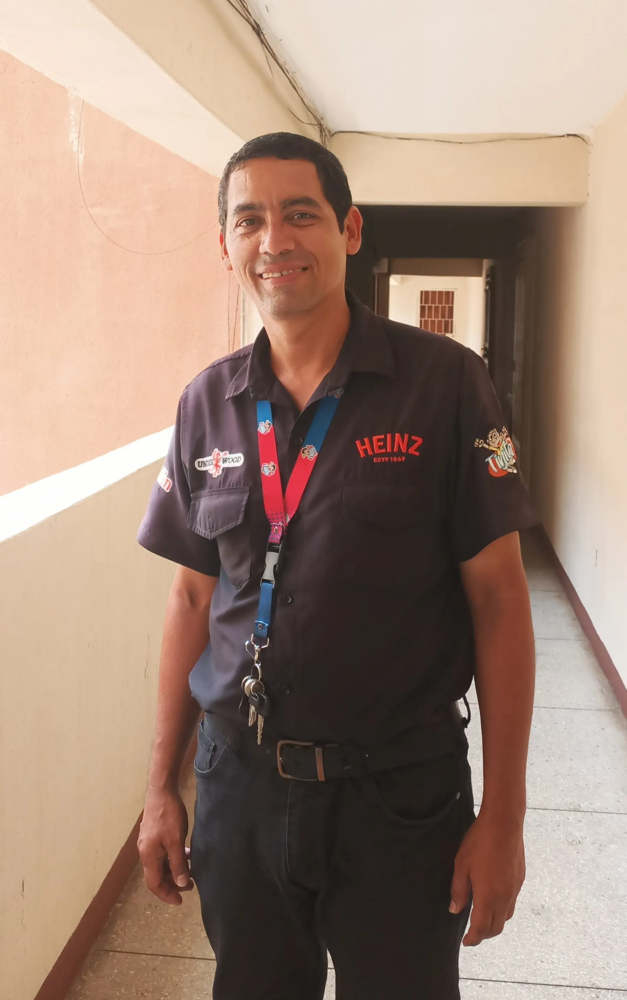

Luis Aviles | WDD 130

Hello, my name is Luis Aviles. I am from Puerto Ordaz, Bolívar State, Venezuela. I enjoy programming, and I am very happy to be studying web development.
-
Albuquerque New Mexico Temple
Baton Rouge Louisiana Temple
Caracas Venezuela Temple